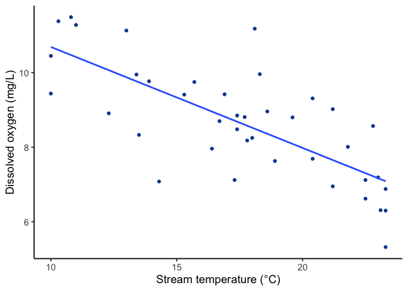
9 Simple Linear Regression
Essentially, all models are wrong, but some are useful.
George E. P. Box
Back in Chapter 2, we used the covariance between two variables to quantify the strength and direction of a relationship (Pearson’s \(r\)), and fit a best-fit line through a scatterplot, learning to compute its slope and intercept from the data. What we couldn’t yet do was ask the inference question every other test in this book has asked:
Could chance alone plausibly have produced our result?
Now that we’ve learned hypothesis testing, sampling distributions, and the logic of comparing an observed statistic to a null distribution, we can put the regression line through that same machinery to test whether a given slope is evidence of a real relationship.
9.1 Regression Basics
The equation for a linear regression will be familiar, and it’s one of the most heavily used equations in applied science:
\(y = \beta_0 + \beta_1 x + \varepsilon\)
Slope term: \(\beta_1\)
Intercept term: \(\beta_0\).
A linear equation, fit to real data, is a statistical model. We never observe \(\beta_1\) directly. So, we need one additional term for the residual error, \(\varepsilon\). This is the additional variability in the DV not explained by our model.
Parameters and sample statistics
Because it’s a model, our beta coefficients represent the population parameters, which you’ll recall come from the inferred, but never truly known, parent distribution.
| Symbol | What is it? | Do we know it? |
|---|---|---|
| \(\beta_0, \beta_1\) | True population intercept and slope | Almost never known for sure |
| \(b_0, b_1\) | Sample intercept and slope | Yes, calculated by fitting the line to our data |
What we generate by drawing the best-fit line through our data is a sample slope, usually written \(b_1\).
9.1.1 Hypotheses
Our null and alternate hypotheses are fairly straightforward:
\(H_0: \beta_1 = 0\) (there is no linear relationship between the continuous IV and the continuous DV)
\(H_A: \beta_1 \neq 0\) (there is a linear relationship between the variables)
But how to test them formally?
Recall the “signal over noise” pattern, which is the basis for inference.
\[ \text{statistic}=\frac{\text{effect}}{\text{error}}. \]
Like any other statistic, \(b_1\) varies from sample to sample. If we drew a new sample from the same population and fit a new line, we’d get a slightly different \(b_1\), just by chance. Simple linear regression asks whether the sample slope \(b_1\) is large enough, relative to that sampling variability, to conclude that a real linear relationship exists in the population, rather than one produced by chance alone.
We’ve previously done \(t\)-tests on means, but the test statistic can be generated for other values too, in this case, our sample slope:
\[ t = \frac{\text{effect}}{\text{standard error}} = \frac{b_1}{SE(b_1)} \]
We need just one more thing to get our p-value, our degrees of freedom. In our simple linear regression, one degree of freedom is spent estimating the intercept, one for the slope:
\(df = n - 2\)
Comparing our estimated slope to its standard error, we can now quantify the probability our \(b_1\) estimate could have occured by chance alone under the null hypothesis.
9.2 Worked regression example: stream temperature and dissolved oxygen.
Let’s work through an example. Warmer water holds less dissolved gas, so ecologists expect dissolved oxygen (DO) to decline as stream temperature rises. This matters for stream health: low DO can stress or kill fish and invertebrates. Suppose we sample 40 stream sites, measuring water temperature (°C) and dissolved oxygen (mg/L) at each.
The scatterplot in Figure 9.1 shows a clear downward trend. Just from the graph, we can guess a couple of things:
Pearson’s \(r\) should be negative, since DO falls as temperature rises
It should sit fairly close to \(-1\) since the points hug the line with only modest scatter.
Before now, we didn’t have a way to test whether an \(r\) that size is more than chance would produce, only how to compute it. Regression adds that missing piece by writing that observed relationship as a model we can test.
9.2.1 The regression model
We model dissolved oxygen as a linear function of stream temperature, plus error:
\[DO = \beta_0 + \beta_1(\text{Temperature}) + \varepsilon\]
\(\beta_0\) is the population intercept, \(\beta_1\) is the population slope, and \(\varepsilon\) is the error, the part of DO that temperature alone doesn’t explain.
We don’t know \(\beta_0\) and \(\beta_1\); we estimate them from the sample as \(b_0\) and \(b_1\), using the same least-squares logic from Chapter 2 (the line that minimizes the sum of squared residuals).
In R, this is a single line of code:
fit <- lm(DO ~ stream_temp, data = stream_df)This fitted line (Figure 9.2) is the best-fit line that minimizes the total squared distance between the data and the line.
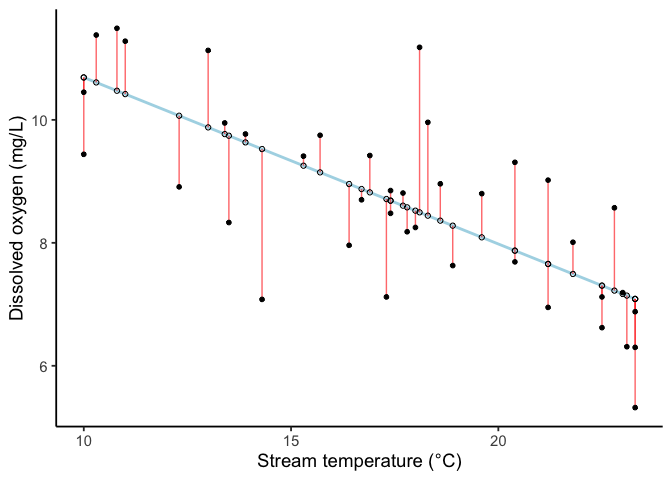
Here’s the table of model coefficients R gives us.
| Term | Estimate | Std. Error | t | p | CI low | CI high |
|---|---|---|---|---|---|---|
| (Intercept) | 13.40 | 0.73 | 18.44 | < .001 | 11.93 | 14.87 |
| stream_temp | -0.27 | 0.04 | -6.72 | < .001 | -0.35 | -0.19 |
With the results of the regression, we can get an equation for the fitted line:
\(\widehat{DO} = 13.4 - 0.27 \times \text{Temperature}\).
The hat over \(DO\) marks it as a predicted value, what the model outputs for a given temperature, as distinct from an actually observed \(DO\) measurement.
The “estimate” column in our regression model output for the intercept and the slope are \(b_0\) and \(b_1\), not \(\beta_0\) and \(\beta_1\). Recall this line is our model’s estimate from this one sample, not the true population line, which we never actually observe.
The intercept (\(b_0 = 13.4\)) is the model’s predicted DO at 0°C, technically part of the model but outside the range of temperatures we actually sampled (10 to 24°C), so we won’t lean on it for interpretation.
The slope (\(b_1 = -0.27\)) is the part we care about most: for every 1°C increase in stream temperature, predicted dissolved oxygen drops by about 0.27 mg/L.
9.3 Testing the slope
The slope \(b_1\) is a sample estimate. Recall the hypothesis test asks whether the population slope \(\beta_1\) could plausibly be zero:
\(H_0: \beta_1 = 0\) (no linear relationship between stream temperature and dissolved oxygen)
\(H_A: \beta_1 \neq 0\) (there is a linear relationship)
This \(t\)-test for the regression slope, unlike the tests in earlier chapters, doesn’t need a separate function call: lm() computes it automatically the moment you fit the model. You the get whole coefficient table, Std. Error, \(t\), and \(p\), all at once.
Recall the test statistic compares the estimated slope to its standard error, the Std. Error column already in the coefficient table above, which measures how much \(b_1\) would bounce around from sample to sample if we repeated this study over and over:
\[t = \frac{b_1}{SE(b_1)} = \frac{-0.271}{0.04} = -6.72\]
with \(df = n - 2 = 38\) (one degree of freedom spent estimating the intercept, one for the slope).
Where the \(p\)-value comes from. If temperature and DO were truly unrelated in the population, repeating this study many times would still produce a nonzero \(b_1\) just by chance, and a \(t\)-statistic that follows a \(t\)-distribution with \(df = 38\). Figure 9.3 shows that distribution, with the critical values marking the boundary of the most extreme 5% under \(H_0\), and our observed \(t\) marked against it.
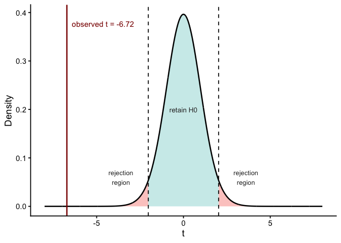
Our observed \(t = -6.72\) sits far past the critical values of about \(\pm 2.02\), well outside where 95% of \(t\)-values would fall if temperature and DO were unrelated. The \(p\)-value is just the probability of landing that far out (or farther) in either tail under \(H_0\): here, \(p < .001\), meaning essentially never. This crosses the conventional \(\alpha = .05\) threshold.
We reject \(H_0\): stream temperature is linearly related to dissolved oxygen.
The 95% confidence interval for the slope, also in the coefficient table above, runs from -0.353 to -0.189 mg/L per °C. Because this interval does not contain 0, it agrees with the hypothesis test, as it always will.
9.4 R-squared: variance explained
After fitting a linear regression model, you also need to determine how well the model fits the data. Does it do a good job of explaining changes in the dependent variable?
R-squared is a goodness-of-fit measure for linear regression models. It tells us the percentage of the variance in the dependent variable that the independent variables explain collectively. R-squared measures the strength of the relationship between your model and the dependent variable on a convenient 0 – 100% scale.
Just as one-way ANOVA in the last chapter partitioned total variability into a between-groups piece and a within-groups piece, regression partitions the total variability in \(Y\) into a piece explained by the line and a piece left over as residual error:
\[SS_{Total} = SS_{Regression} + SS_{Residual}\]
\(R^2\) is the proportion of that total variability the line accounts for:
\[R^2 = \frac{SS_{Regression}}{SS_{Total}}\]
For simple regression with one predictor, \(R^2\) is literally Pearson’s \(r\) from Chapter 2, squared: \((-0.737)^2 = 0.543\), matching the model’s \(R^2\) below exactly.
| R-squared | F | df1 | df2 | p | |
|---|---|---|---|---|---|
| value | 0.543 | 45.09 | 1 | 38 | < .001 |
The table also reports \(F\), \(df1\), and \(df2\). With one predictor, \(F\) and \(t\) test the exact same thing: \(F = t^2 = -6.72^2 = 45.09\), matching the table. ANOVA reports its omnibus test this same way, and \(F\) is the form that generalizes once more than one predictor is involved, which comes up shortly.
Here \(R^2 = 0.54\): stream temperature accounts for about 54% of the variation we observed in dissolved oxygen across sites. The remaining variation comes from everything else the model doesn’t capture (discharge, shading, groundwater input, and so on), folded into \(\varepsilon\).
Reporting the result. We report a regression result the same way as any other test: the slope, the test statistic, degrees of freedom, and \(p\), plus \(R^2\) as the effect size.
Dissolved oxygen declined significantly with stream temperature, \(b_1 = -0.27\), \(t(38) = -6.72\), \(p < .001\), \(R^2 = 0.54\).
9.5 Consider both significance and effect size
As with all our tests, our significance test isn’t the whole picture. In addition to testing our slope (is \(\beta_1\) significantly different from 0?), we also consider \(R^2\), which is regression’s effect size.
The two don’t move together the way intuition suggests.
A very large sample, the kind common in remote sensing and other big-data environmental work, can make a trivial effect statistically significant: more observations shrink the standard error until almost any nonzero slope clears \(p<.05\), no matter how little variance it explains.
A small sample tends to fail the opposite way, missing a real, sizeable effect because the standard error is too large for it to reach significance.
\(R^2\) is what tells you how much of the variation is actually being explained.
Neither \(p\) alone nor \(R^2\) alone tells the whole story, so we must report both.
Figure 9.4 shows all three combinations this can produce: a strong relationship with a non-significant slope (underpowered), a weak relationship with a significant slope (a large sample), and a relationship that is both strong and significant.
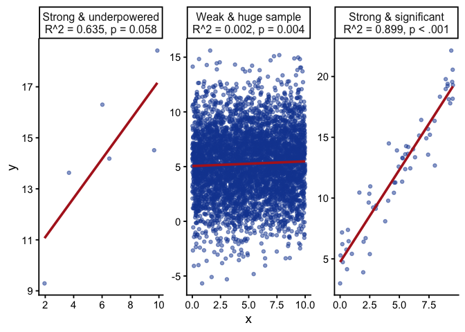
Note
How big is a “good” \(R^2\)? It depends on the field. In studies of human behavior, where dozens of unmeasured factors shape any outcome, an \(R^2\) of 0.20 is a genuinely strong result. Environmental systems tend toward more direct physical relationships, so 0.5-0.8 for a well-chosen single predictor isn’t unusual. An \(R^2\) that looks too good, say 0.98, from one predictor in a noisy field system, is itself worth a second look: it’s more often a sign of a setup problem than something to celebrate.
9.6 Checking assumptions
Simple linear regression assumes:
Linearity: the true relationship between \(X\) and \(Y\) is a straight line.
Constant variance (homoscedasticity): the spread of residuals is roughly the same across the whole range of \(X\).
Normality of residuals: the residuals are approximately normally distributed.
9.6.1 Sometimes the truth isn’t a line at all
You can do linear regression without thinking about whether the phenomenon you’re modeling is actually close to linear. But you shouldn’t.
Jordan Ellenberg, How Not to Be Wrong
A straight line is not guaranteed to be the right shape for your data, and the two assumptions above have two different failure signatures on this one plot: a curve means linearity is violated, a funnel shape means constant variance is violated. The most useful diagnostic for catching either is a residuals-versus-fitted plot:
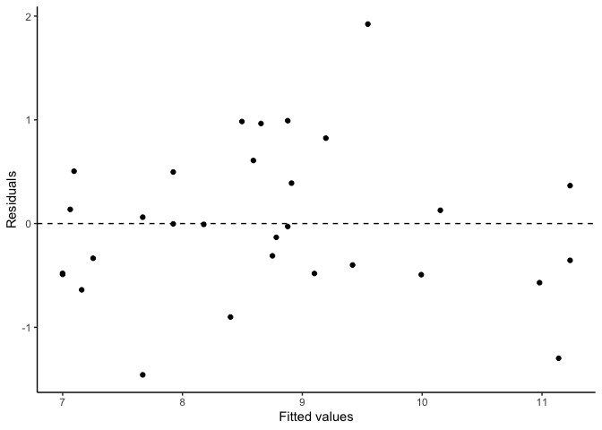
Figure 9.5, for our stream temperature data, shows what we want to see: residuals scattered evenly above and below zero, with no curve (which would suggest the true relationship isn’t linear) and no funnel shape (which would suggest variance changes systematically across the range of \(X\)).
Let’s try checking residuals for a different set of data, this time on avian influenza cases over time.
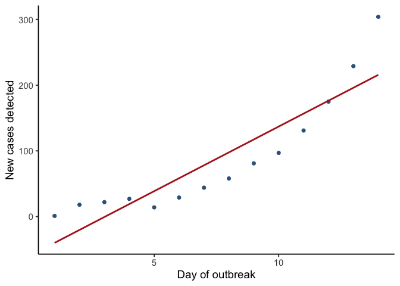
A straight line fit to these 14 days gives \(R^2 = 0.81\) and \(p < .001\), which by the benchmark from a couple pages back looks like a solid, significant fit for a field system. Nothing about those numbers alone raises a flag.
Check it properly. The residuals-versus-fitted plot tells a different story than the \(R^2\) and slope test did.
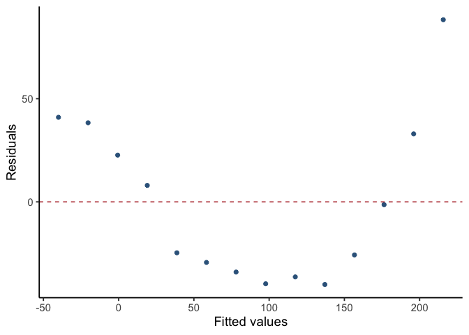
That U-shape is unambiguous: the line underpredicts early and late in the outbreak and overpredicts in the middle, exactly what you’d see forcing a straight line through a curve.
If a residual plot curves rather than scattering randomly, that’s the model telling you a straight line is the wrong tool.
Fixes typically include:
- a different model (often adding a polynomial term)
- a transformation, re-expressing a variable on a different scale so a straight line fits it (log-transforming a variable that grows multiplicatively, like the outbreak data below, is the most common case)
- or a nonlinear model entirely, beyond what this course covers
9.6.2 Checking normality
For normality, we check the residuals two ways: visually, with a Q-Q plot, and formally, with the Shapiro-Wilk test.
A Q-Q plot sorts the residuals and compares them to where a perfectly normal distribution would place values at the same percentiles. If the residuals are normal, the points fall close to the diagonal line; a systematic curve or S-shape means they don’t.
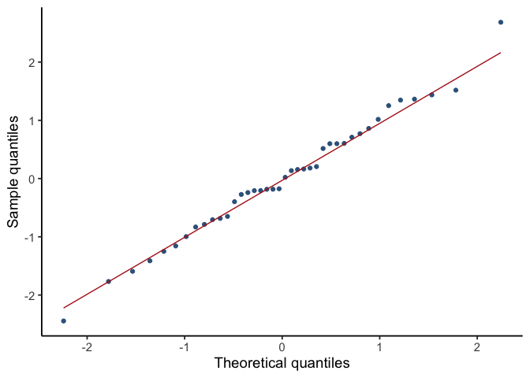
Figure 9.8 looks close to straight, consistent with normal residuals. Shapiro-Wilk asks the same question formally: \(H_0\) is that the residuals come from a normal distribution, so a small \(p\)-value is the evidence against normality.
| Statistic | p-value |
|---|---|
| 0.99 | 0.987 |
The residuals don’t depart from normality here (\(p = 0.987\)). As with any formal normality test, treat this as one piece of evidence alongside the Q-Q plot and residual plot, not a strict gate. Shapiro-Wilk has the least power to detect real departures exactly when the sample is small, which is exactly when the visual checks matter most.
Now apply the same two normality checks to the avian influenza model, the one we already know is badly nonlinear.
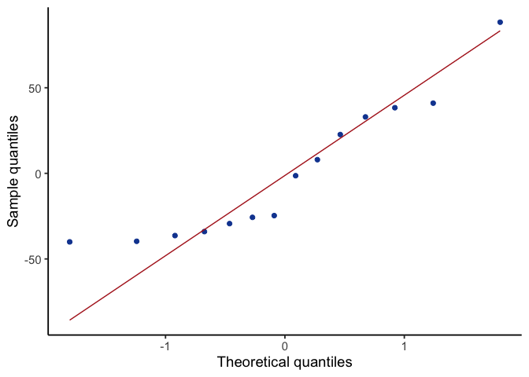
The Q-Q plot looks close to straight, and Shapiro-Wilk agrees (\(p = 0.060\), not significant). Both checks pass on a model we already know is the wrong shape. That is because they check normality of the residuals, which is a different assumption than linearity, and a model can badly violate linearity while its residuals still look roughly normal.
9.7 Using the model: prediction
Once we’ve confirmed a real linear relationship, the fitted equation lets us predict DO at any stream temperature. Plugging temperature into the fitted line directly gives the prediction: at 20°C,
\[\widehat{DO} = b_0 + b_1(20) = 13.4 + (-0.27)(20) = 7.98\]
R gives the same number, along with a confidence interval:
| Stream temperature | Predicted | CI low | CI high |
|---|---|---|---|
| 20 | 7.98 | 7.59 | 8.37 |
At 20°C, the model predicts DO of 7.98 mg/L, with a 95% confidence interval from 7.59 to 8.37. Notice that 20°C falls inside our sampled range of 10 to 24°C, this is interpolation, and it’s what regression is good for. Predicting DO at, say, 35°C would be extrapolation: nothing in the data tells us the relationship stays linear (or even stays a relationship at all) beyond the range we actually observed, and the further outside that range, the less trustworthy the prediction. Figure 9.10 shows both zones on the same line.
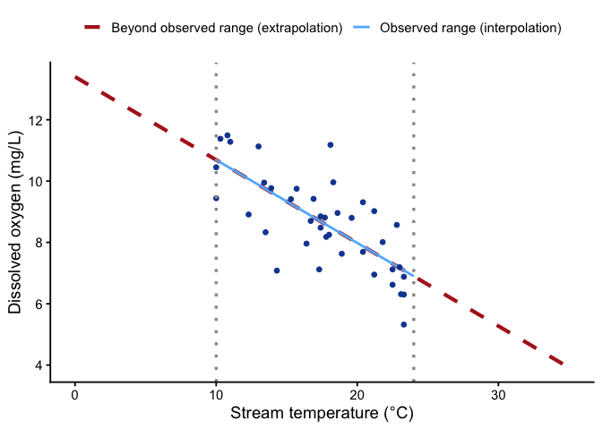
Regression is used for extrapolation all the time, and often reasonably: a well-understood physical process can justify projecting a line beyond the data you happened to collect. Extrapolating a straight line is only safe if the true relationship actually stays straight past the range you observed.
The problem is that a narrow window of data can’t tell you which kind of curve you’re actually on. Figure 9.11 shows four very different relationships, exponential growth, a sigmoid, a hump-shaped curve, and a truly straight line, each with the same short observed window highlighted in blue. The fitted line (dashed red) extrapolated based on the observed data is also exactly the same for all 4 panels, it just looks different because the y-axis scales are different. Once you see the full curve (grey), you can see how badly linear extrapolation beyond the range of observed data would perform in each case.
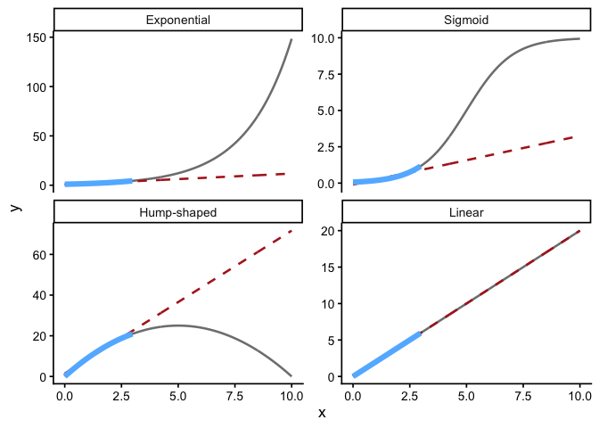
To make this a bit more concrete, suppose officials use the linear fitted line from our example above to project avian influenza cases at day 30, well past the 14 days observed.
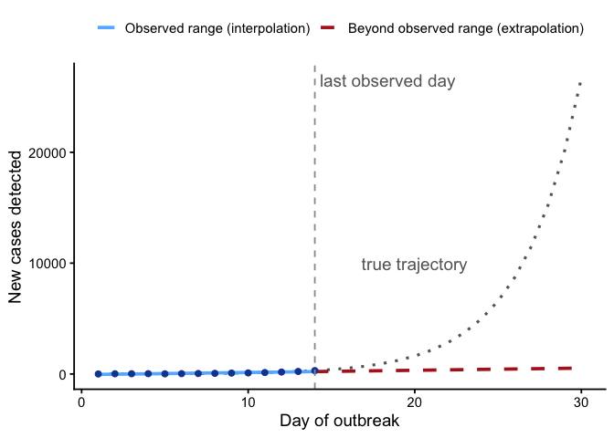
The linear model predicts about 530 cases on day 30. If the outbreak is exponential, the actual count is closer to 26,682, roughly 50 times higher.
Planning surveillance and containment staffing off the linear forecast would leave the response badly under-resourced for the outbreak that actually arrives. A straight line can look fine over a short early window and still be very wrong about where that window leads.
What this calls for is a different model, not more data or a better-fit line. Fitting curves and transformations is beyond what this course covers, but recognizing when you need one, by plotting the data and the residuals, is not.
9.8 Chapter Summary
Why it matters. Regression is where description becomes inference. Chapter 2 drew a best-fit line through a scatterplot; this chapter turns that line into something you can test, quantify, and make predictions from.
Core ideas
- The slope is a hypothesis. \(H_0: \beta_1 = 0\) says there is no linear relationship. Testing it uses a \(t\)-test on the slope divided by its standard error, with \(df = n-2\), and it is mechanically identical to testing a correlation coefficient.
- \(R^2\) is the effect size. It partitions variance exactly as ANOVA does, reporting the proportion of variation in \(y\) the line accounts for. A relationship can be real (\(p\) small) and still explain very little, which is why you report both.
- Look at your data, then look at your residuals. The assumptions that must be met are linearity, constant variance, and roughly normal residuals. A residuals-versus-fitted plot catches violations a formal test can miss entirely, as the outbreak example showed.
- Predict inside your data; extrapolate beyond with caution. Interpolating within the observed range of \(x\) is what regression is for. Extrapolating beyond it is sometimes justified, but only when you have good reason to believe the relationship stays the same shape past the range you observed.
- A good \(R^2\) can still be the wrong model. The outbreak example fit a straight line to exponential growth and got \(R^2=0.82\), a residuals-versus-fitted plot that clearly curved, and an extrapolated forecast tens of thousands of cases short of reality. The residual plot catches this; a Q-Q plot, which checks a different assumption, does not.
Barnes, Mallory L. 2023. Statistics for Environmental Science.